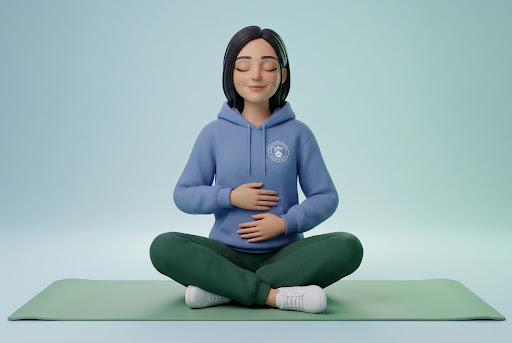

Tu Salud,
Nuestra Prioridad
Explora recursos diseñados específicamente para la comunidad politécnica. Aprende a gestionar tu estrés y construye hábitos que perduren toda la vida.

Acciones de Promoción
Pequeños pasos que generan grandes cambios en tu entorno estudiantil.
Diálogo Abierto
Espacios seguros de conversación para compartir experiencias académicas y reducir la carga emocional.
Tu camino al bienestar
Cada paso que das hoy es una inversión en tu paz mental de mañana. No estás solo en este proceso.
Zonas de Respiro
Identifica los puntos verdes del campus ideales para desconectar entre clases.
location_onAsesoría
Busca orientación personalizada para organizar tu carga horaria sin colapsar.
personHábitos Saludables
El combustible para tu cerebro y cuerpo.
Sueño Reparador
Prioriza 7-8 horas de descanso para consolidar lo aprendido en el día.
Hidratación Consciente
Beber agua mejora la concentración y previene dolores de cabeza por estrés.
Nutrición Balanceada
Evita el exceso de cafeína y azúcares. Prefiere frutas y frutos secos.
Movimiento Diario
15 min de caminata rápida reducen el cortisol drásticamente.
emoji_objects Datos Curiosos
La Regla del 20-20-20: Cada 20 min, mira algo a 20 pies (6 metros) por 20 segundos para evitar fatiga visual.
El color Azul: Rodearte de tonos azules y verdes en tu escritorio ayuda a calmar el sistema nervioso central.
Música Lo-Fi: El ritmo constante (70-90 BPM) ayuda a entrar en estado de "Flow" durante el estudio.
TRIVIA RÁPIDA
¿Cuánto tiempo de meditación reduce el estrés crónico?
¡Correcto! La consistencia de 10 min es mejor que largas sesiones esporádicas.
Casi, pero la respuesta es 10 minutos constantes.